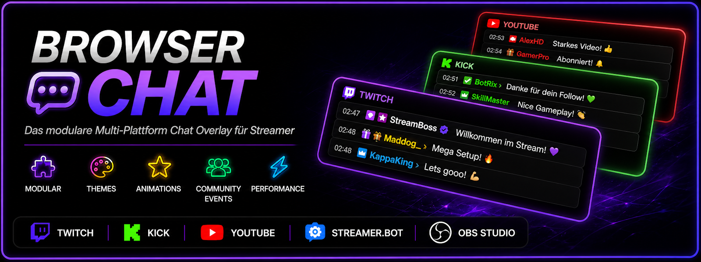

Einstellungen

Browser Chat präsentiert unsere gemeinsame Arbeit
Browser Chat Settings • v1.4
Browser Chat Local Settings
Gestalte dein Multi-Plattform-Chat-Overlay für Twitch, Kick und YouTube direkt in der Live-Vorschau. Bereits verfügbar Eigene Farben und Schriftarten pro Plattform Fenstergröße, Rundung und Darstellung anpassen Fade-, Pop-, Slide- und Zoom-Animationen auswählen Animationsdauer und Geschwindigkeit einstellen Twitch-Emotes und Chatfilter vorbereiten Einstellungen lokal speichern und wieder laden Wähle im mittleren Menü einen Bereich aus, um mit der Gestaltung zu beginnen.
Live Chat Settings
Hier stellst du Darstellung und Anzeigedauer deines Live-Chats für das OBS-Overlay ein.
Aktueller Stand
Live-Chat-Vorschau mit echten Nachrichten
Anzeigedauer von 10 bis 45 Sekunden einstellbar
Browser-Source wird derzeit manuell über die index.html eingebunden
Der dunkle Hintergrund dient nur der Darstellung in den Einstellungen. Im OBS-Overlay bleibt der Live-Chat transparent.
Tablet-Design
Passe hier ausschließlich das Einstellungs-Tablet an. Das Chat-Overlay bleibt unverändert.
Farbmodi
Getrennt: Eigene Farben für Powerknopf und Tablet-Rahmen.
Verbunden: Eine gemeinsame Farbe für Rahmen, Powerknopf und Knopfränder.
Djain-Schweif: Weich pulsierendes Violett-Blau.
Harmony: Geteilter Rot-Silber-Rand mit Frostknöpfen.
Bedienung
Fenster bestätigen: Aktualisiert nur die Vorschau und speichert noch nichts.
Einstellungen speichern: Speichert die Chat-Einstellungen lokal und übergibt sie an Streamer.bot.
Tablet speichern: Speichert ausschließlich Farbmodus und Tablet-Design.
Änderungen sind zunächst nur als Vorschau sichtbar. Nutze anschließend den jeweils passenden Speicherknopf, um sie dauerhaft zu übernehmen.
Channel Chat Settings
Bitte zuerst einen Kanal auswählen.
Animation Settings
Vorschau Fenster Chat
Live Chat Settings
Tablet-Einstellungen
Diese Farben gelten nur für das Settings-Tablet.